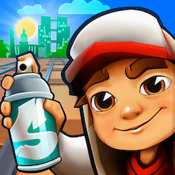
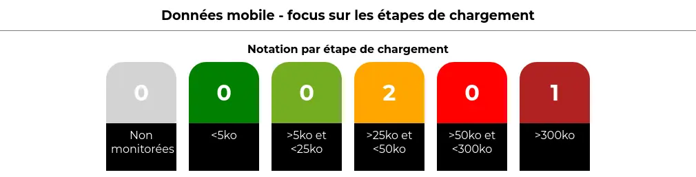
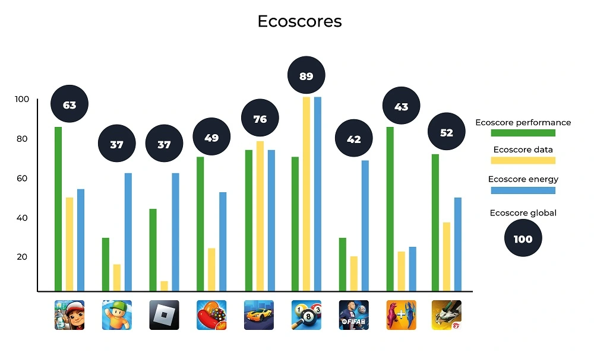

Previously, we provided a ranking of mobile video games :
- https://blog.greenspector.com/en/2019-mobile-video-games-ranking-12-apps-measured/
- https://blog.greenspector.com/en/best-2019-android-apps-and-games-ranking-by-greenspector/
Since the most recent update (beginning of 2020), downloads and revenues have significantly surged. Today, mobile games account for most of the digital gaming revenue (source: https://www.statista.com/topics/1680/gaming/#topicOverview ), notably experiencing unprecedented increases during the pandemic (source: https://www.statista.com/statistics/511639/global-mobile-game-app-revenue/ )
If we took at the most downloaded mobile games in 2022, we get the following ranking:

Source : https://www.statista.com/statistics/1285134/top-downloaded-gaming-apps-worldwide/
[table “80” not found /]The first thing that stands out compared to the previous mobile games ranking is that three games reappear: Subway Surfers, Candy Crush Saga, and 8 Ball Pool. In terms of downloads, Subway Surfers remains in the first position of the ranking
Looking at the APK deployments, we notice that the frequency of new APK versions varies widely: at most one every 15 days or so for Candy Crush Saga or Race Master 3D, and at least one per week for Roblox. These updates undoubtedly have an environmental impact. For the sake of simplicity, we will focus here on the impact of their usage, assuming the conditions of the initial game launch. The functional unit would thus be: « starting a game session for the first time on a mid-range Android mobile device using Wi-Fi.
This will allow us to assess the environmental impacts of these games to compare them.
Did you know?
In 2021, Google commissioned and published a study on the future of mobile gaming (https://games.withgoogle.com/reports/beyondreport/ ).
While the initial intention was to assess the expected increase in revenue generated by mobile games, some interesting facts have emerged:
- More than half of mobile gamers are female.
- 73% of gamers spend money on these games.
- Most of the gamers are in Asia and the Pacific region.
Methodology
Definition of the User Journey
For measurement, it was essential but challenging to define a common user journey for all the games. As mentioned earlier, the obvious choice for us was a journey starting with the launch of the application and then the start of a game session. However, things quickly became more complex.
For most of the games studied, the initial launch involves several intermediate screens:
- Gathering GDPR-related consent
- Input of the player’s age
- Gathering consent related to advertisements
- Creating a profile or linking to an account on a third-party service (Google, Facebook, etc…) (It would be interesting to analyze the third-party services used in each game in more detail at a later stage)
- Loading content updates
If the first three items on the list are only filled out once, content updates can occur unexpectedly and independently of the APK update.
Linking the games to a Google account made automating the Bridge Race game too complex compared to the time we had decided to allocate for this study. This led to the exclusion of the game from the sample studied here. We observed differences in behavior when linking the Google profile depending on the device used. In the future, we will consider conducting a complementary study that directly assesses the impacts of one minute of gameplay using Greenspector’s Testunner tool.
In the end, we still attempted to automate the following user journey for each game:
Step 1: Launching the application
Step 2: Loading the title screen
Step 3: Starting a game session
Between these measured steps, some actions for consent validation or login that were not measured because they were absent in some applications. The significant number of elements to click on and intermediate screens during the initial launch of the FIFA Mobile game prevented us from reaching the actual gameplay launch. The measurements and calculations presented here are therefore below the actual values but have been retained to highlight other aspects.
As part of this study, the data was collected between August 11th and August 16th, 2023, using Greenspector Studio. We utilized the Greenspector Domain-Specific Language (GDSL) to create test scripts that automatically replicate the actions to be performed on a mobile phone. The Testrunner module then enabled us to take measurements on an Android smartphone, providing us with energy and resource consumption (memory, CPU, data exchanged), and response times for each step of the user journey.
Subsequently, based on these measurements, the impact model integrated into Greenspector Studio assessed the corresponding environmental impact and Eco-Scores. As a reminder, in the case of a user journey measurement, the overall Eco-Score is divided into three Eco-Scores: Performance, Mobile Data, and Energy. Each is rated on a scale from 0 to 100, with 100 being the best score. Each of these scores is derived from the ratings achieved for each measurement step, which depend on predefined thresholds. For instance, in the case of mobile data for loading steps:

Hypotheses
During this evaluation, we started from the perspective of the initial application launch. This inherently represents a more impactful journey than subsequent uses but provides a better understanding of the game’s operation. It’s worth noting that during actual gameplay, there are often regular updates that can also have an impact.
Measurement Context
- Device: Samsung Galaxy S9, Android 10
- Network Connection: Wi-Fi
- Screen Brightness: 50%
- Tests were conducted over at least 3 iterations to ensure result reliability.
Hypotheses for Environmental Projections
- User Location: 100% World
- Server Location: 100% World
- Devices Used: Smartphones only
The environmental footprint depends on the location and type of application servers, user locations, and the type of devices they use. We have focused our study solely on the use of applications on smartphones. We have also assumed that users and servers are overwhelmingly located outside of France, as precise statistics were unavailable.
Résultats
[table “81” not found /]First and foremost, we observe that APK files for initial downloads are mostly between 160 and 200 MB, which is already quite substantial. Only Candy Crush Saga and 8 Ball Pool are below this range, at around 90 MB. For Free Fire, the file size goes up to 400 MB!
The duration of usage is estimated to be a little over 20 minutes per day according to this study by Statista: https://www.statista.com/statistics/1272891/worldwide-game-apps-time-spent-daily-age/. The impact of installation and updates, assuming daily or near-daily usage, has therefore been excluded from the present study. However, it’s possible that for a game used sporadically over time, updates might have a more significant impact than actual usage. In such cases, there is a risk for the game publisher that users may lose interest in the game. While the APK update can be managed daily like other mobile applications, it’s the content update during the game launch that can become problematic. As we will discuss later, everything is designed to encourage daily play.
Regarding the data transferred for the initial launch of the game, most games require a few additional megabytes. Only 8 Ball Pool does not require any data transfer. Conversely, FIFA Mobile, Stumble Guys, Race Master 3D, and Merge Master require downloading a few tens of megabytes. In particular, FIFA Mobile requires downloading over 160 MB, which includes updating the content based on sports news. This is seen as added value by the publisher but is considered a poor practice from a sustainability perspective. Initially, efforts should focus on how to reduce the technical size of the necessary information, and ideally, limit the refresh frequency and the comprehensiveness of the information.
These substantial data transfers are often correlated with degraded performance. For instance, for Stumble Guys and FIFA Mobile, it sometimes takes 1 to 2 minutes for the screen that allows the game to appear to be launched. For half of the games, simply launching the application takes between 10 and 20 seconds, which is particularly long. In the case of Roblox, the title screen loads quickly, with content loading occurring after selecting a game (and generally taking quite a while). The longest launch time is for 8 Ball Pool, but for this game, no data is transferred, and the impact on the battery is relatively low (particularly due to the limited number of animations). This game ultimately has the best scores. In general, the scores obtained are as follows:

We can observe that 8 Ball Pool is the game with the best scores, mainly due to what we just discussed (few animations, no data transferred). In this regard, its operation during launch is closer to what I would tend to associate with « old-school » mobile games: offline and relatively simple games (though not as basic as Snake and similar games). It’s worth noting that once the onboarding process of 8 Ball Pool is completed, it reverts to a more typical operation, including online gameplay by default, which would need to be measured separately.
In comparison, the other games have lower scores. Only Race Master 3D and Subway Surfers stand out somewhat. It appears that the games studied here have scores that are at best around the average, with very few exceptions. All of this may indicate concerns regarding efficiency or sustainability but is more likely attributed to the nature of these applications themselves: animation, data exchanges, and often a multitude of persuasive design mechanisms. We will revisit this later.
As for the environmental impacts, the calculations lead to the following results:
[table “82” not found /]The high impacts observed here are correlated with findings made previously, particularly significant data loads that lead to performance degradation and increased battery consumption on the device. Consequently, the games with the highest impacts are FIFA Mobile (far ahead of the others), as well as Stumble Guys and Merge Master. Unsurprisingly, 8 Ball Pool is also the least impactful game in this regard.
Analyse
The measurements conducted highlight certain design choices that directly contribute to increased environmental impacts.
As mentioned earlier, the length of onboarding processes often highlights three interrelated concerns: the collection of personal data, advertising, and more broadly, the use of persuasive design mechanisms. As a reminder, these mechanisms are aimed at keeping the user engaged with the application for as long as possible and are present in many applications and websites. Ethical Designers, among others, have a keen interest in this matter. However, let’s delve into the case of the games studied here.
The RGPD consent, as well as that related to advertisements (and sometimes age verification), aim to minimize the display of ads during the game. This, of course, serves as a source of revenue for game developers. The level of intrusiveness of advertisements can vary. Often, players are offered the option to watch video ads in exchange for rewards or to continue playing. Sometimes, it’s even possible to purchase the game to get rid of these ads. The vigilance and attention of players make them more susceptible to such suggestions, which is linked to persuasion mechanisms.
In the field of design, particularly in terms of user interface and interaction design, the concept of « gamification » has been discussed for several years. This involves incorporating game elements to increase user engagement and make the experience more enjoyable. This shouldn’t be underestimated, as some games are very skilled at attracting and retaining players. Furthermore, by taking this approach further, it’s possible to encourage players to spend money.
For example (among many others), let’s consider Candy Crush Saga. It would be possible to offer this game in a more limited form, focused solely on the gameplay itself: progressing through levels of varying difficulty with the objective of clearing candies or obstacles. The rules and challenges are simple and form the core of the game as such. However, various artificial elements have been added here:
- Bright colors, visual effects, and sounds are used to enhance the impact of user actions. This is referred to as feedback.
- Limited resources (lives, bonuses, etc.) are introduced to create the need and, more importantly, a sense of scarcity. Often, it’s possible to replenish these resources by watching videos or spending money (virtual or real).
- Progress bars (level or otherwise), trophies, rewards, avatars, and scores are incorporated to encourage constant improvement and enable users to compare themselves with others. This leads us to another important element of gamification and attention capture:
- Social connection: seeing what others are doing, comparing oneself with them, and allowing them to see what one is doing. Like social networks (often through a connection with them), this mechanism encourages more and better gameplay but also creates attachment to the game through connections with other players. This is accomplished through online gameplay or by connecting with social networks (for sharing achievements, finding players, etc.).
- Randomness to create addiction (analogous to slot machines). Correlated with limited resources, this factor appears in the form of random rewards, sometimes in the form of loot boxes (https://medium.com/behavior-design/hooked-on-loot-boxes-how-design-gets-us-addicted-79c45faebc05 ). This is expected to increasingly lead to legal framework changes for regulatory purposes: https://www.gamesindustry.biz/european-parliament-votes-to-take-action-against-loot-boxes-gaming-addiction-gold-farming-and-more .
All of this contributes to the player’s motivation, particularly through a subtle balance of their frustration between two states that the player consciously or unconsciously seeks to achieve:
- Flow: The player’s state of concentration where objectives seamlessly follow one another. This is typically the period when time seems to fly by. Consequently, this can encourage the player to invest (time, virtual resources, real money) to maintain this state and avoid frustration.
- Fiero: A state of satisfaction linked to overcoming a particularly formidable obstacle (in non-mobile video games, this is one of the basic mechanics in what is sometimes called « Souls-like » games: games that emphasize player mastery to offer a very high challenge).
The game design often revolves around these two states, directly or indirectly (gradual increase in difficulty, rewards, etc.). This delicate balance will be crucial for the quality of a game and, more importantly, the gaming experience. For publishers, it also affects the time players spend on the game and the money they spend. This can sometimes lead to higher environmental impacts.
Directly, it encourages players to spend as much time as possible on the game by utilizing online play and links with social networks, displaying advertisements, and designing interfaces that are rich in information and visual effects.
Indirectly, it promotes consumption (spending money) but also overconsumption (wanting more and generating frustration). This leads to environmentally unfriendly behaviors that go against the principles of environmental sustainability.
It’s worth noting that the video game industry is becoming increasingly aware of its environmental impacts.
Polygon has shown interest in the topic: https://www.polygon.com/features/22914488/video-games-climate-change-carbon-footprint .
This growing awareness often leads to actions as well as greenwashing efforts (example: https://www.ouest-france.fr/high-tech/jeux-video/ecologie-le-secteur-du-jeu-video-fait-il-du-greenwashing-355c56fc-0c3d-11ee-8e71-2cd44afe92ef?utm_source=pocket-newtab-bff [FR]).
However, more and more relevant resources are emerging on the subject: https://playing4theplanet.org/resources. Some manufacturers are looking into the environmental impact of their hardware, while publishers are trying to assess their environmental footprint. The regular turnover of gaming machines and the release schedules of games themselves pose inherent environmental challenges. Online gaming and digitization do not necessarily make things better. In this regard, you can refer to the study by ADEME (French Agency for Ecological Transition) on the digitization of cultural services. Similar to what can be observed, for example, with websites, optimizations are possible (efficiency), but the real challenge lies in sustainability (in contrast to the extravagance of open-world games). There are also broader issues to consider:
- How video games can encourage more eco-friendly behaviors: https://usbeketrica.com/fr/article/si-notre-smartphone-avait-une-conscience-est-ce-qu-on-le-remplacerait-aussi-facilement [FR]
- How video games can implement systems that do not encourage excessive consumption (accumulation logic, power race, etc.)
- How to strengthen our connection to nature? How to introduce game mechanics that go beyond accumulation and competition? How to portray possible (e.g., The Climate Trail ) or desirable futures?
Conclusion
Mobile games are an integral part of many people’s daily lives, making it even more essential to study their environmental impacts (although other aspects of Responsible Digital, such as the attention economy, accessibility, and personal data management, remain relevant). While technical optimizations are still possible, the crux of the issue lies in their design and the behaviors they induce (including the risk of addiction and financial risks for players).
Video games, in general, could and should become a catalyst for raising awareness about ecological issues. Just as with accessibility, some initiatives have already begun, and it will be interesting to see how they evolve in response to the urgent challenges at hand.